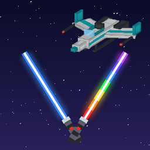
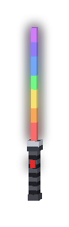
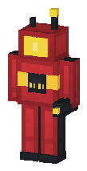
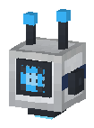
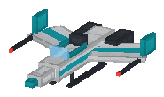

Bender Star Knights
A Minecraft add-on: build your own glowing Star Blade (rainbow ones too!), use Star Powers, bounce robots' blaster bolts back at them, fly the Star Dart, and duel your brother!
⬇️ Download for Minecraft
Version 1.0.1. For Minecraft Bedrock on iPad, iPhone, Android and Windows. Free, no ads.
How to put it on the iPad
- Tap Download for Minecraft above, then tap Download when Safari asks.
- Open the Files app, go to Downloads, and tap BenderStarKnights.mcaddon. Minecraft opens and says Successfully imported.
If tapping the file doesn't open Minecraft, tap the Share button and choose Minecraft.
- In Minecraft, tap Create New World (or the pencil next to an old world). Scroll to Behavior Packs, tap Available, tap Bender Star Knights v1.0.1, then Activate. It works alongside the other Bender add-ons.
- Tap Create or Play. The first time you join, you pick your first Star Blade and get a Knight Comm, a Temple Kit, a Droid Buddy and a Star Dart.
Updating from an older version?
Minecraft keeps old copies next to new ones. The new one has its version in the name: Bender Star Knights v1.0.1.
- Download and import the new version as above.
- In Minecraft, go to Settings → Storage. Under Behavior Packs, delete the old Bender Star Knights copies (the ones without v1.0.1). Under Resource Packs, delete the old Bender Star Knights Textures copies.
- Open each world's settings and check Behavior Packs → Active. If it still shows an old copy, remove it and activate v1.0.1. When you join the world, the chat says which version is on.
The Star Blades
Seven colors and two rainbows. The Rainbow blade keeps changing color; the Rainbow Stripes blade shows every color at once. Hold one and it lights up with a hum.

Rainbow Stripes
How to build a blade
- Build the Star Knight Temple (below) and go to the crystal cave at the back.
- Tap a crystal to pick a Star Crystal of that color. Each crystal grows back after 10 seconds.
- Hold the crystal and tap the Blade Workbench in the middle of the temple. You get a Star Blade that color!
- No temple? Put a Star Crystal on top of 2 iron ingots in a crafting table. Make crystals from an amethyst shard and a dye (look in the recipe book).
Star Powers
Hold your Star Blade and tap. Where you look picks the power. Each one recharges in a few seconds.
💨
Star Push
Look ahead and tap
Monsters in front go flying.
🪶
Star Lift
Look up and tap
Monsters in front float up into the air.
🦘
Star Leap
Look down and tap
A giant jump, with a soft landing.
🧲
Star Pull
Sneak and tap
Pulls monsters toward you, and grabs dropped things.
The Star Knight Temple
- Find some open, flat land and stand where you want the middle of the temple.
- Hold the Temple Kit and tap. A sparkly square shows where it goes. Tap again to build it.
- Inside: the great hall with the Blade Workbench, the crystal cave at the back and a droid bay. Outside: the training arena and a landing pad with a Star Dart.
- Changed your mind? Stand in the temple, sneak and tap the kit twice. The land goes back how it was.
Robot training
Clank Trooper
Shoots blaster bolts
Silly robots that clank around. They fall apart in a shower of sparks.

Clank Captain
Bigger and tougher
Shoots three bolts at a time. It's in the last wave.
- Tap the Training Console at the top of the arena and choose Start training.
- Robots appear on the red pads: 3 waves, each bigger than the last.
- Bounce their bolts back! Hold your Star Blade and look at the robots: bolts flying at you bounce straight back at whoever shot them.
- Beat all 3 waves for a prize: a Star Crystal for a new blade.
Droid Buddy and Star Dart

Droid Buddy
Follows you and zaps monsters
Paint it 8 colors or call it to you with the Knight Comm. It beeps!

Star Dart
Look and push forward to fly
Hold jump to climb. Tap your blade or the Knight Comm to fire lasers at monsters.
⚔️ Duel Mode
- Tap the Knight Comm and switch Duel Mode on. Both knights have to switch it on.
- Then every blade hit on the other knight scores a point and knocks them back. First to 5 wins!
- While you duel, nobody gets hurt. Switch it off any time in the Knight Comm.
How to craft more
All the recipes are in the crafting table's recipe book.
- Star Blade: a Star Crystal on top of 2 iron ingots
- Star Crystal: a dye on top of an amethyst shard (rainbow: red, yellow and blue dye; stripes: green, orange and purple dye, over a shard)
- Knight Comm: glass pane on top, iron, redstone, iron below
- Droid Buddy: redstone torch, then iron-observer-iron, then iron
- Star Dart: iron, then white concrete-redstone block-white concrete, then 2 iron
- Blade Workbench: gold, amethyst shard, gold over 3 quartz blocks
- Training Console: glass pane, redstone, glass pane over 3 iron ingots
- Temple Kit: 8 quartz blocks around a block of amethyst
Good to know
- Blades, powers, the droid and the Star Dart only hurt monsters and robots. They never hurt players, pets or animals.
- A Training Console you put down anywhere works too: robots come from 4 spots around it.
- Sneak and hit your Droid Buddy 3 times to pack it into a kit. Hit an empty Star Dart 3 times to pack it up.
- Beating a Clank Captain always drops a Star Crystal.
- A Star Dart left in the air floats gently down. Jumping out gives you slow falling.
- The Temple Kit only builds in the Overworld, and not on water.
- Worlds with add-ons don't earn Xbox achievements.